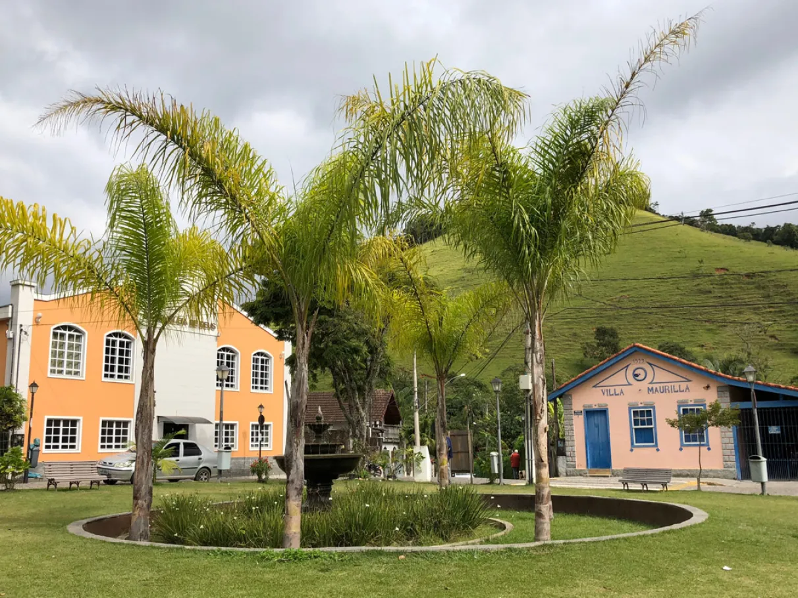
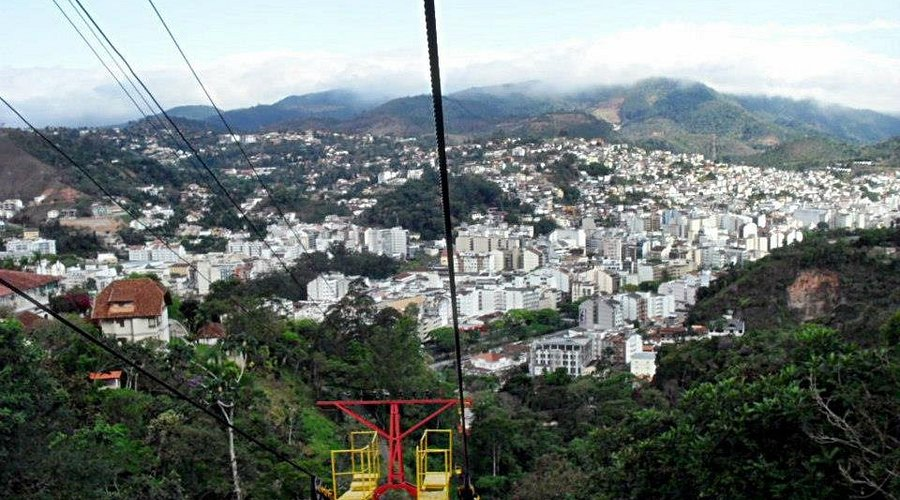
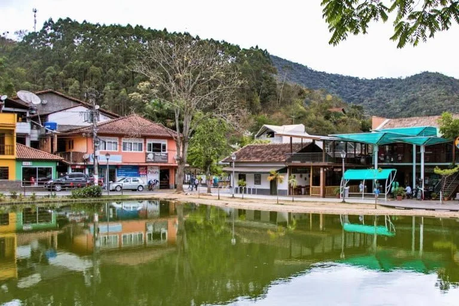

Um dos pontos mais altos da região, oferece uma vista panorâmica espetacular das montanhas da Serra Fluminense, sendo muito procurado por turistas e amantes da natureza.

Atração que liga a Praça do Suspiro ao Morro da Cruz, proporcionando belas vistas da cidade durante o passeio.

Um dos principais cartões-postais da cidade, cercada por atrações turísticas, áreas de lazer e eventos culturais.

Charmoso distrito conhecido por suas cachoeiras, trilhas, natureza preservada e ambiente tranquilo, ideal para descanso e ecoturismo.

Lumiar é um distrito de Nova Friburgo conhecido por suas cachoeiras, rios e belas paisagens. É um destino turístico famoso pelo contato com a natureza, tranquilidade e ecoturismo.